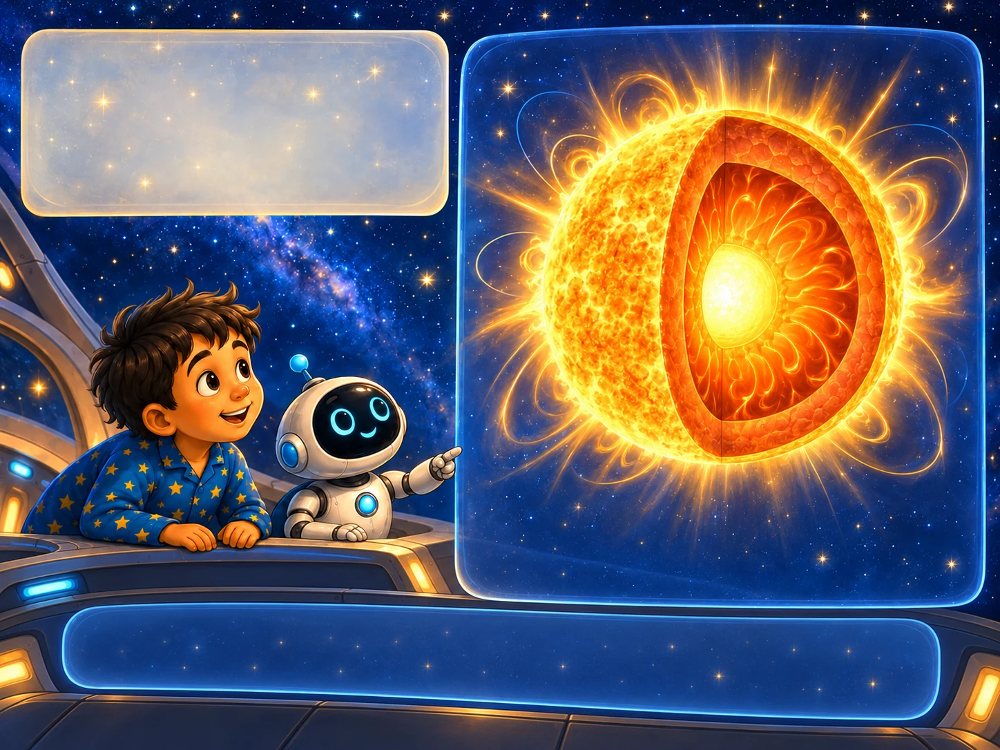

What is a star?A hot ball that is winning a very long argument
A star is an enormous ball of hot glowing gas. Its own weight squeezes it inwards. Deep in the middle it is so squeezed and so hot that it makes new gas — and pours out light that pushes back outwards.
Dot: “Look inside. Then try turning one of them off, and see what happens.”
Core temperature:
about
15 million°C
about
15 million°C
Surface temperature:
about
5,500°C
about
5,500°C
Stars are mostly
hydrogen and
helium gas.
hydrogen and
helium gas.
The Sun has been
shining for about
4.6 billion years.
shining for about
4.6 billion years.
The Sun’s gravity
helps keep the
solar system together.
helps keep the
solar system together.